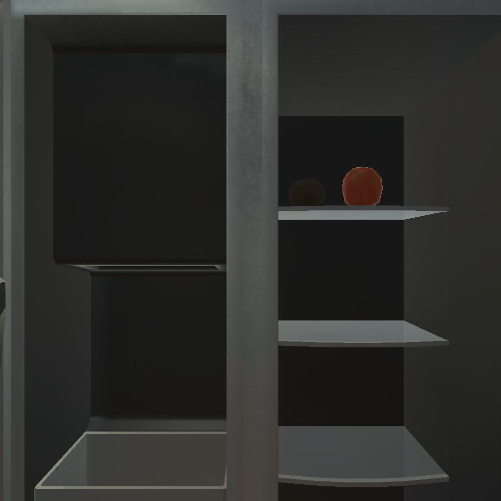

---------------------------------------------------------task: 12---------------------------------------------------------
--------------------------------------------------------------------------------------------------------------------------------------------------------------------
--------------------------------------------------------------------------------------------------------------------------------------------------------------------
Step:--------------------------------------------------------------------------19-------------------------------------------------------------------------------
----------------------------------------
VLM Prompt:
Image1:
Image2:
Image3:
**Instruction**
1. Analyze the provided images to identify all visible household objects and compare the difference between images (e.h. whether the object is opened or not and taken on hand or not), focusing on those relevant to the task description "clean some tomato and put it in countertop."
2. Use the analysis of images and the task hint "The agent must find an object of the desired type, pick it up, go to a sink or a basin, clean the object with a sink or basin, and then find the correct location to place it and put it down there. The agent does not need to use soap bottle or faucet to clean the object, and the agent just needs to do action that is "clean the object with the sink or sink basin"." to answer the question: what is the most reasonable action in the choices for the task description "clean some tomato and put it in countertop"?
3. Decide and write the answer using the template: The answer is: (i): , where i is the real number. If there is no desired object in images, search every place based on **Initial Observation** to find the object. And if no one is exactly correct, choose a similar answer.
**Initial Observation**
You are in the middle of a room. Looking quickly around you, you can see cabinet (1-6), microwave (1), countertop (1-2), coffeemachine (1), toaster (1), sink (1), sinkbasin (1), fridge (1)
**Answer Choices**
(1): go to cabinet 1
(2): go to cabinet 2
(3): go to cabinet 3
(4): go to microwave 1
(5): go to cabinet 4
(6): go to cabinet 5
(7): go to cabinet 6
(8): go to countertop 1
(9): go to coffeemachine 1
(10): go to toaster 1
(11): go to countertop 2
(12): go to sink 1
(13): go to sinkbasin 1
(14): close fridge 1
(15): take apple 1 from fridge 1
(16): take potato 1 from fridge 1
(17): examine fridge 1
**Answer**
Let's think step by step by following the instructions.
----------------------------------------
----------------------------------------
Original Response:
Firstly, analyzing the images, we can see a fridge with its door open, and on the shelves inside, there are two visible objects: an apple and a potato. There is no tomato visible in the images provided, so we need to search other places based on the initial observation to find the tomato.
Regarding the task description "clean some tomato and put it in countertop," the agent must first find a tomato. Since it's not in the fridge, the agent should search the cabinets as they are common storage places for non-refrigerated produce like tomatoes.
The most reasonable action for the task description, considering the images and the initial observation, would be to start searching the cabinets for a tomato. Once the tomato is found, the agent would then go to the sink or sink basin to clean it, and finally, the agent would place it on the countertop. Since the images don't show the inside of the cabinets, we need to choose an action that involves searching the cabinets.
The answer is: (1): go to cabinet 1. If no tomato is found there, the agent should proceed to check the other cabinets sequentially.
----------------------------------------
----------------------------------------
>>> Refine Original VLM Response and Get Pure Action: go to cabinet 1
----------------------------------------
-----------------------------------------------------------------
Running time: 13.888088464736938 seconds
Total Money: 6.915500000000007
-----------------------------------------------------------------
-----------------------------------------------------------------
Text Observation:You arrive at loc 0. The cabinet 1 is closed.
-----------------------------------------------------------------
UNSUCCEED